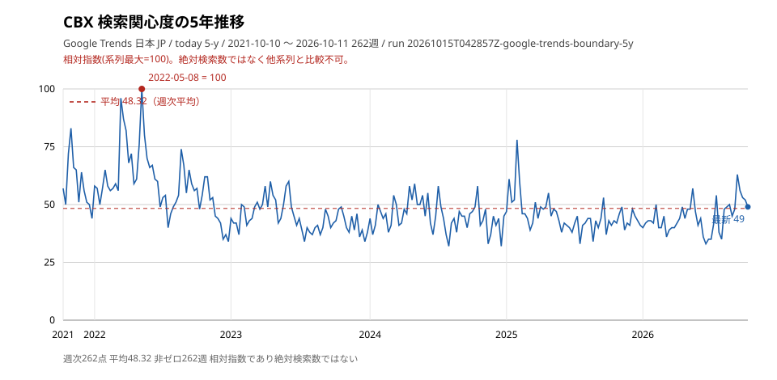
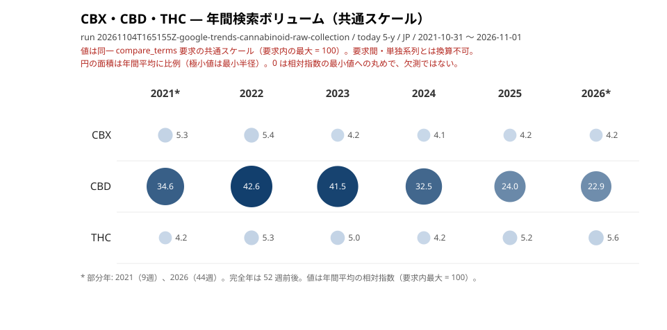
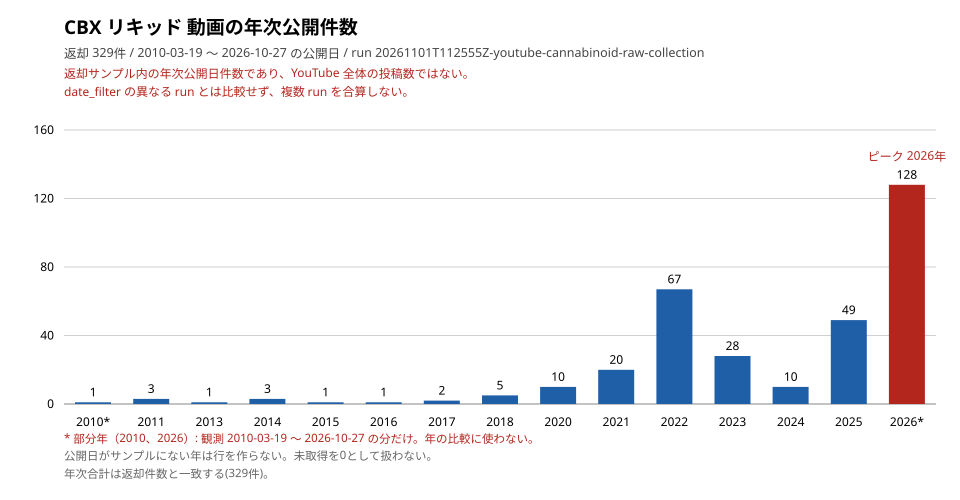

引用 (How to Cite)
KATO, Kyoji（2026）.
「Japan Cannabinoid Platform Trends Dataset 2026: Google Trends and YouTube Evidence from Japan」.
Version 1.14.8
Routeflags Co., Ltd.
[Dataset].
DOI: 10.5281/zenodo.23390594

このセクションでは、本ページの情報がどのように収集・分析されたかを公開しています。
「日本におけるCBX成分へのオンライン関心は、どのように推移しているか？」
最終更新: 2026-11-05。
改訂: 2026-11-05 に研究質問の表現を統一し、引用の版表記をリリース 1.14.2 に合わせた。YouTube 節から動画単位の行（タイトル・チャンネル・URL）を削除し、あわせてチャンネル名を含む分布表（X・YouTube の上位5チャンネル）を削除した（集計のみ、ISS-20261015-COL-030 §4.1）。Google Trends 節は要求条件と観測範囲を分離し、表ごとの出所を明記し、共通スケール節を CBD・THC を同一要求に含むアンカー付き run の実測に合わせて更新した。2026-11-05 の C3 内容レビュー（C1〜C45）で数値・出所・区分を再確認し、公開状態の節を追加した（v1.14.5）。
改訂: 2026-11-06 に CBX リキッド 1 run（329 件 date_filter=all）の月次公開日件数（ピーク月・年次分布・再生数統計）を別集計の節として追加した。既存の YouTube 節は変更していない。引用の版表記を 1.14.6 に更新した。引用の版表記を 1.14.8 に更新した。
データソース: Google Trends / 地域: 日本 (JP) / 要求: today 12-m・today 5-y（週次、単独系列と共通スケール） / 収集方法: google-trends-mcp 0.1.1 / 取得日: 表ごとの出所を参照
Google Trends から、CBX の日本国内検索興味度（相対指数 0-100）を取得しました。
用語の定義:
| 指標 | 値 |
|---|---|
| 要求条件 | JP / today 5-y |
| 観測範囲（返却点の範囲） | 2021-10-10 〜 2026-10-11（262週） |
| 5年平均 | 48.32 |
| ピーク | 2022-05-08（値: 100） |
| 最新値 | 49 |
出所: run 20261015T042857Z-google-trends-boundary-5y（JP / today 5-y / 2026-10-15T04:28:57Z 収集）。記録にある項目: 初出 2021-10-10（値 57）、非ゼロ 262 週 / ゼロ 0 週、データあり期間 2021-10-10 〜 2026-10-11。
補足: この表の run は 20261015T042857Z-google-trends-boundary-5y（query_id cbx-general-ja）、要求窓は 2021-10-15T04:28:57Z_2026-10-15T04:28:57Z（登録窓ファイルなし）。5年平均は週次 262 点の算術平均（小数第 2 位）、非ゼロ週は値が 0 でない週である。

20261015T042857Z-google-trends-boundary-5y。| キーワード | 12ヶ月平均 | 12ヶ月最高 |
|---|---|---|
| CBX | 69.77 | 100 |
出所: run 20261015T042853Z-google-trends-boundary-12m（JP / today 12-m / 2026-10-15T04:28:54Z 収集）。観測範囲 2025-10-12 〜 2026-10-11（53週）。表示値 69.77 は週次 53 点の算術平均（小数第 2 位）。
現行窓で CBD・THC と同時に取得した共通スケール（12ヶ月と5年）。単独系列とは換算できない。
12ヶ月（現行窓 2025-11-02_2026-11-08）
| 検索語 | 平均 | 非ゼロ点 | 区分 |
|---|---|---|---|
| CBX | 8.2264 | 53 週 | 派生 |
| CBD（アンカー） | 45.8302 | 53 週 | 派生 |
| THC（アンカー） | 11.9057 | 53 週 | 派生 |
出所: run 20261104T165149Z-google-trends-cannabinoid-raw-collection（JP / today 12-m / 窓 2025-11-02_2026-11-08 / 観測 2025-11-02 〜 2026-11-01 / 53 週 / 2026-11-04T16:51:49Z 収集）。平均は週次 53 点の算術平均（小数第 4 位）。
5年（現行窓 2021-10-31_2026-11-08）
| 検索語 | 平均 | 非ゼロ点 | 区分 |
|---|---|---|---|
| CBX | 4.4504 | 262 週 | 派生 |
| CBD（アンカー） | 33.0916 | 262 週 | 派生 |
| THC（アンカー） | 5.0496 | 262 週 | 派生 |

compare_terms 要求（CBX・CBD・THC）の共通スケールによる年間平均で、要求内の最大 = 100。要求間・単独系列とは換算できない。年間平均は週次値の暦年平均（部分年: 2021（9 週）、2026（44 週））。出所: run 20261104T165155Z-google-trends-cannabinoid-raw-collection。出所: run 20261104T165155Z-google-trends-cannabinoid-raw-collection（JP / today 5-y / 窓 2021-10-31_2026-11-08 / 観測 2021-10-31 〜 2026-11-01 / 262 週 / 2026-11-04T16:51:55Z 収集）。平均は週次 262 点の算術平均（小数第 4 位）。
比較宣言: この 2 run の計画は comparison ブロックを宣言していないが、要求語は CBX・CBD・THC で、アンカー CBD・THC を同一要求に含む。正規化は同一要求内の最大値 = 100（12ヶ月: CBD の 2026-05-03、5年: CBD の 2025-08-31）。窓の登録ファイルは metadata/windows/<窓 id>.json。
制約: Google Trends は相対指数であり、絶対検索数ではない。0 は相対指数の最小値（閾値未満）であり、検索が存在しなかったことや欠測を意味しない。本節の 5 年・12 ヶ月系列は境界計測のために取得した run（ISS-20261015-GT-001）の観測値であり、研究用に別途再取得したものではない。各系列は単発 run であり、反復実行による安定性は未測定。run 間・窓間の平均は比較しない。本ページは Google Trends・X・YouTube の値を合算せず、YouTube の 6 runs 合計 2288 は採用宣言の returned_count の合計であって分析指標ではない。出所の run_id を参照。
多義語と出所: 登録した検索文字列 CBX は Honda の車種名と同名であり、本節の系列はカンナビノイド固有の検索関心を分離していない。判別クエリ（CBX 大麻 / CBX カンナビノイド）を同時取得した run 20261001T132500Z-google-trends-disambiguated の記録では、判別クエリの平均は 2〜5、裸語 CBX の平均は 68〜69 である。本節の値をカンナビノイド需要として読まない。
出所の所有: 本節の Google Trends raw は 2026-11-04 の owner 決定で cannabinoid-raw-collection が所有する（ISS-20261024-COL-016 Q5）。YouTube も同じ study が所有する。
データソース: X (Twitter) via Apify / 言語: 日本語 (lang:ja) / 有効件数: 147件 / 取得日: 2026-08-05〜09-08
| 指標 | 値 |
|---|---|
| 元データ件数 | 147件 |
| 有効分類数 | 147件 |
| 言語フィルタ | 日本語 (lang:ja) |
分類はキーワードベースのルール分類による。件数と比率は 2026-10-08 時点の分類結果（全 147 件）から取る。信頼区間は Wilson スコア法による 95% 信頼区間。
| カテゴリ | 件数 | 比率 | 95% CI |
|---|---|---|---|
| 配合/成分 | 99 | 67.3% | [59.4%, 74.4%] |
| 未分類 | 18 | 12.2% | [7.9%, 18.5%] |
| 新商品/入荷 | 11 | 7.5% | [4.2%, 12.9%] |
| 体感/効果 | 10 | 6.8% | [3.7%, 12.1%] |
| セール/キャンペーン | 5 | 3.4% | [1.5%, 7.7%] |
| レビュー | 4 | 2.7% | [1.1%, 6.8%] |
| カテゴリ | 件数 | 比率 | 95% CI |
|---|---|---|---|
| 情報提供 | 95 | 64.6% | [56.6%, 71.9%] |
| 体験報告 | 26 | 17.7% | [12.4%, 24.7%] |
| 商業目的 | 14 | 9.5% | [5.8%, 15.4%] |
| 未分類 | 11 | 7.5% | [4.2%, 12.9%] |
| 有害報告 | 1 | 0.7% | [0.1%, 3.8%] |
| カテゴリ | 件数 | 比率 | 95% CI |
|---|---|---|---|
| テキスト | 144 | 98.0% | [94.2%, 99.3%] |
| リンク | 3 | 2.0% | [0.7%, 5.8%] |
方法: キーワードベースのルール分類。信頼区間は Wilson スコア法による95%信頼区間。
制約: ルールベース分類のため、文脈による誤分類の可能性がある。X 検索結果のサンプルであり、全投稿を網羅するものではない。投稿単位のデータは公開しない（集計のみ）。X の観測期間はリポジトリに保持した記録に無く、取得日のみを示す（期間の欠測であり、言及ゼロを意味しない）。
出所: Apify による 2026-08 の収集（147 件。件数の記録は datasets/cbx-social-trends/analysis/cbx_x_data_integrity.md）。分類の内訳は 2026-10-08 時点の分類結果で、raw 非保持のためリポジトリ内で再計算できない。化合物別の分類記録 research/x/20261008-x-classification-batch1.json には CBX の項が無い。
データソース: 厚生労働省 / 調査日: 2026-10-15
| 項目 | 内容 |
|---|---|
| 法的扱い | 合法（ブラックリスト方式・指定なし） |
| 根拠制度 | 指定された物質のみが規制対象。CBX は指定されていない |
| THC 残留限度値（参考） | CBX 製品に Δ9-THC が含まれる場合に適用。油脂・粉末 10ppm、水溶液 0.1ppm、その他（電子タバコ等）1ppm。2024-12-12 施行の改正大麻取締法・麻薬及び向精神薬取締法による成分規制 |
| 出典 | 一次資料（PDF） |
注意: 法的状況は調査時点の結果。法改正の可能性あり。CBX そのものが合成カンナビノイドである場合、将来的に指定薬物に指定される可能性もゼロではない。
データソース: cbx-product-coa（PLANNED）/ 調査日: 2026-10-15
CBX 製品の分析証明書（COA）はリポジトリに記録が無い（2026-10-15 時点）。これは欠測であり、製品の安全性を示すものではない。製品を選ぶときは、サプライヤーが提供する COA（分析証明書）を確認し、含まれる成分とその濃度、THC 検出結果を把握することが重要である。
データソース: YouTube Data API v3 / 検索クエリ: 「CBX」 / 取得日: 2026-10-04
| 指標 | 値 |
|---|---|
| 総レコード数 | 600件（月 50 件 × 12 ヶ月） |
| CBX 関連 | 232件（約39%） |
| 除外（CBX400F 等） | 339件（約57%が Honda バイク） |
| 対象期間 | 2025-10 〜 2026-09 |
| 月 | CBX 関連件数 |
|---|---|
| 2025-10 | 19 |
| 2025-11 | 13 |
| 2025-12 | 14 |
| 2026-01 | 18 |
| 2026-02 | 24 |
| 2026-03 | 15 |
| 2026-04 | 22 |
| 2026-05 | 20 |
| 2026-06 | 18 |
| 2026-07 | 20 |
| 2026-08 | 25 |
| 2026-09 | 24 |
出所: research/youtube/20261004-cbx-youtube-12months-report.md（2026-10-04 収集、YouTube Data API v3）。なお、当該 API v3 は 2026-10-12 の方針判断により使用を取り止め、当時の raw は削除済みである（本節の数値は削除前の取得結果であり、再取得は行わない）。
制約: YouTube 検索結果のサンプルであり、全動画を網羅するものではない。CBX は Honda バイクと同名であり、除外判定は記録の分類に従う。動画単位の行（動画 ID・タイトル・チャンネル・URL・再生数）は公開しない（集計のみ、ISS-20261015-COL-030 §4.1）。
置換証拠は Apify streamers/youtube-scraper（Actor h7sDV53CddomktSi5）の検索結果サンプルであり、API センサスではない。件数を v3 取得値と直接比較しない。CBX キーワードの採用 run は存在しない（欠測であり、需要ゼロを意味しない）。下表の 6 runs は youtube-consistency 研究の他化合物の採用分であり、CBX の数値証拠に流用しない。
| run_id | キーワード | 件数 | dateFilter（API 要求） | 観測窓（payload の動画公開日、半開区間） |
|---|---|---|---|---|
20261010T141947Z-youtube-youtube-consistency | HHBD リキッド | 224 | all | [2020-09-30, 2026-10-06) |
20261010T143429Z-youtube-youtube-consistency | H4CBH リキッド | 395 | all | [2020-10-01, 2026-10-02) |
20261010T144421Z-youtube-youtube-consistency | CBD リキッド | 456 | all | [2014-11-17, 2026-10-10) |
20261010T145727Z-youtube-youtube-consistency | CBN リキッド | 468 | all | [2008-08-01, 2026-09-24) |
20261010T164915Z-youtube-youtube-consistency | CRDH リキッド | 352 | all | [2022-09-29, 2026-09-12) |
20261011T191900Z-youtube-youtube-consistency | CBD リキッド | 393 | year | [2025-10-11, 2026-10-10) |
| 合計（6 runs） | — | 2288 | — | — |
照合: 内訳 224＋395＋456＋468＋352＋393＝2288 は宣言 metadata/provenance/declarations/20261015-youtube-csv-adoption.json の各 returned_count と一致する。正式記録は docs/issues/closed/resolved/20261015_p1_unadopted-youtube-exports.md（RESOLVED 2026-10-15）。raw は datasets/youtube-consistency/data/raw/youtube/<run-id>/ の無追跡 private 保管であり、追跡層に per-post データを置かない（集計のみ）。
時間の区別: dateFilter は API 要求パラメータ（相対ローリング窓）であり、window.start/end_exclusive は payload の動画公開日の観測範囲（半開区間）である。観測範囲を API 検索条件として扱わない（オーナー指示 2026-10-15、宣言の limitations に明記）。year は直近約365日のローリング窓であり、観測窓 [2025-10-11, 2026-10-10) と整合する。
制約（置換証拠）: Apify 検索結果は取得時点のサンプルであり、全動画のセンサスではない。同一クエリの再実行は非決定的に変動しうる。異なるプラットフォーム・異なる収集手段の件数は直接比較できない。動画単位の記録は公開しない（集計のみ）。
データソース: YouTube Data API v3 / クエリ: "CBX リキッド" / 件数: 125件 / 取得日: 2026-10-04。再生数等の深度統計は Apify 収集（24件、2026-10-01 フィルタ）を併記する。
| 指標 | 値 |
|---|---|
| 総レコード数 | 125 |
| 対象期間 | 2025-10 〜 2026-09 |
| 多義語問題 | なし（「CBX リキッド」は具体的なクエリで Honda CBX と混同しない） |
| 急増期 | 2026-07 以降（19→26→31件） |
| 月 | 件数 |
|---|---|
| 2025-10 | 13 |
| 2025-11 | 3 |
| 2025-12 | 8 |
| 2026-01 | 1 |
| 2026-02 | 4 |
| 2026-03 | 6 |
| 2026-04 | 7 |
| 2026-05 | 2 |
| 2026-06 | 5 |
| 2026-07 | 19 |
| 2026-08 | 26 |
| 2026-09 | 31 |
| 統計量 | 再生数 |
|---|---|
| 平均 | 6,806 |
| 中央値 | 2,336 |
| 最大 | 61,241 |
| 最小 | 181 |
出所: 月次分布は research/youtube/20261004-cbx-rikiddo-youtube-12months-report.md（2026-10-04 収集、YouTube Data API v3）。再生数等の深度統計は Apify 収集のフィルタ後 24 件（datasets/cbx-social-trends/data/processed/youtube_filtered_202607/、2026-10-01 フィルタ、クエリ「CBX リキッド」）。動画長・公開年（絶対日付）の記録は無い。当該 API v3 は 2026-10-12 の方針判断により使用を取り止め、当時の raw は削除済みである（本節の数値は削除前の取得結果であり、再取得は行わない）。
制約: YouTube 検索結果は取得日時点のものであり、動画の追加・削除により変動する可能性がある。24 件中、全件が CBX タイトルを含むが、全件がカンナビノイド CBX であることを保証するものではない。動画単位の行（動画 ID・タイトル・チャンネル・URL・再生数）は公開しない（集計のみ、ISS-20261015-COL-030 §4.1）。
採用との関係（ISS-20261015-COL-033）: 上記 24 件フィルタは COL-033 の採用対象ではない。COL-033 の採用 6 runs（合計 2288、宣言 metadata/provenance/declarations/20261015-youtube-csv-adoption.json）に CBX リキッドは含まれない。CBD リキッドの採用 2 runs（20261010T144421Z-youtube-youtube-consistency 456 件・dateFilter=all・観測 2014-11-17〜2026-10-10、20261011T191900Z-youtube-youtube-consistency 393 件・dateFilter=year・観測 2025-10-11〜2026-10-10）も別キーワードの検索結果サンプルであり、CBX リキッドの証拠に流用しない。dateFilter は API 要求パラメータ（相対窓）であり、観測範囲を検索条件として扱わない。動画単位の記録は公開しない（集計のみ）。
データソース: YouTube Search via Apify / 検索クエリ: 「CBX リキッド」（日本語・製品語による近似的な日本市場限定） / query_id: cbx-liquid-ja
1 run の返却サンプルを集計した（他の run と合算しない）。値は返却サンプル内の月次公開日件数であり、YouTube 全体のピークではない。
| 指標 | 値 |
|---|---|
| run | 20261101T112555Z-youtube-cannabinoid-raw-collection |
| query_id | cbx-liquid-ja（CBX リキッド） |
| date_filter（API 要求条件） | all（dateFilter を送らない無制限の要求） |
| 収集終了（UTC） | 2026-11-01T11:32:40.802Z |
| 返却件数 | 329 件（実行状態 success） |
| 観測公開日範囲（返却レコードの公開日） | 2010-03-19 〜 2026-10-27（UTC） |
| ピーク月（返却サンプル内） | 2026-08（28 件） |
| 再生数 最大 / 中央値 / 平均 / 最小 | 3,936,663 / 2,493 / 35,635.95 / 28（取得時点の値） |
| 年 | 件数 |
|---|---|
| 2010 | 1 |
| 2011 | 3 |
| 2013 | 1 |
| 2014 | 3 |
| 2015 | 1 |
| 2016 | 1 |
| 2017 | 2 |
| 2018 | 5 |
| 2020 | 10 |
| 2021 | 20 |
| 2022 | 67 |
| 2023 | 28 |
| 2024 | 10 |
| 2025 | 49 |
| 2026 | 128 |

20261101T112555Z-youtube-cannabinoid-raw-collection。制約: 月次・年次件数は返却サンプル内の公開日件数であり、YouTube 全体の投稿数を表さない（全動画を網羅するものではない）。要求の結果上限（maxResults 500）は宣言に記録され、返却 329 件はその上限に達していないが、返却サンプルであることは変わらない。再生数は取得日時点の値であり、変動する可能性がある。未取得を 0 観測として扱わない。1 run のみで、反復実行による安定性は未測定のため、他の run・他の化合物・他ソースの値と合算も比較もしない。本節の run は COL-033 の採用 6 runs（合計 2288）に含まれない別 run であり、その合計に加えない。動画単位の行（動画 ID・タイトル・チャンネル・URL・再生数）は公開しない（集計のみ、ISS-20261015-COL-030 §4.1）。
出所: run 20261101T112555Z-youtube-cannabinoid-raw-collection（date_filter=all / 2026-11-01T11:25:55.215Z 開始・2026-11-01T11:32:40.802Z 終了、329 件）。採用宣言は metadata/provenance/declarations/20261101-youtube-cbx-liquid-cannabinoid-raw-collection.json（execution.returned_count 329、window 2010-03-19T00:00:00Z 〜 2026-10-28T00:00:00Z の半開区間）、再保持の検証記録は metadata/provenance/declarations/20261106-youtube-liquid-batch-reretention-cannabinoid-raw-collection.json（hash・件数は宣言と一致）。payload SHA-256 は 85fa05a3…471dc。raw payload は Git 非追跡・非公開で、リポジトリに保持していない。
照合: 年次合計は返却件数と一致する（329）。ピーク月は返却サンプル内の最多月である（2026-08 が 28 件）。
公開状態: 公開承認済み（approved）。2026-11-11 に図入り版の C3 内容レビューと公開契約の再審査を実施した。公開契約 envelope は metadata/publication/research-cbx/ にあり、decision.json の status は approved、artifact_sha256 は現行 HTML の SHA-256 と一致する。
2026-11-11 に validation.cli audit-publication と gate-publication を実行した。本ページの公開契約監査は現行HTML hash・artifact.json・decision.json・evidence.json を照合し、ページ単位の公開適格ゲートは SUPPORTED である。C3 内容レビュー（C1〜C45）は図入り版を対象に再確認し、レビュー対象 hash と現行HTML hashを再固定した（envelope: metadata/publication/research-cbx/）。
本節の版を v1.14.5 としてリリースする。
KATO, Kyoji（2026）.
「Japan Cannabinoid Platform Trends Dataset 2026: Google Trends and YouTube Evidence from Japan」.
Version 1.14.8
Routeflags Co., Ltd.
[Dataset].
DOI: 10.5281/zenodo.23390594